#1993 A World Beyond
Alternativ: Tomorrowland
 gesehen am 22.09.2015
gesehen am 22.09.2015
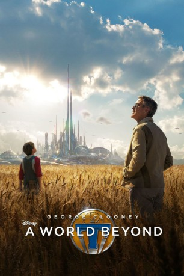 
 IMDB-Wertung: 6.5 / 10
IMDB-Wertung: 6.5 / 10  Metascore: 60
Metascore: 60 
Die junge, clevere Casey Newton interessiert sich sehr für Wissenschaft. Eines Tages findet sie eine mysteriöse Anstecknadel, die sie Visionen von einer anderen Welt bekommen lässt, und lernt den einst genialen Erfinder Frank Walker kennen. Walker hat jedoch seine frühere Klasse verloren und ist stark desillusioniert. Der Hauptgrund dafür ist, dass er eine Art von Parallel-Universum, das Tomorrowland genannt wird, verlassen musste. Dies traf ihn besonders schwer, da es dort keinerlei Sorgen gab, sondern Frieden und Glückseligkeit herrschten. Nach seinem erzwungenen Abschied aus der Parallelwelt hat David Nix dort die Herrschaft übernommen und die wunderbare Welt in etwas Dunkles und Böses verwandelt. Gemeinsam wollen das Mädchen und der Erfinder nach Tomorrowland zurückkehren, um es zu dem blühenden Ort zu machen, der es einst war.
Jahr: 2015
Dauer: 130 Minuten
FSK: 12
Land: USA Studio: Walt Disney Studios Motion PicturesTonspuren: DTS - ,
Untertitel: Deutsch, Englisch,
Auflösung: 1080p (1920x872) Größe: 10240 MB
Genre: Action, Abenteuer, Familie, Mystery, Sci-Fi
Regisseur: Brad Bird
Drehbuch: Damon Lindelof, Brad Bird, Damon Lindelof, Brad Bird, Jeff Jensen
Soundtrack: Michael Giacchino
Darsteller:
- 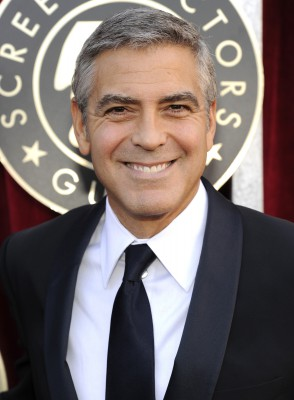 George Clooney als Frank Walker
 Hugh Laurie als Nix
Hugh Laurie als Nix- Britt Robertson als Casey Newton
- 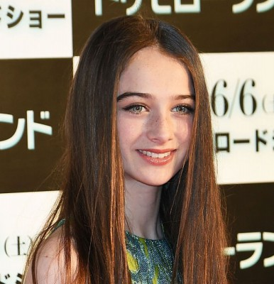 Raffey Cassidy als Athena
- 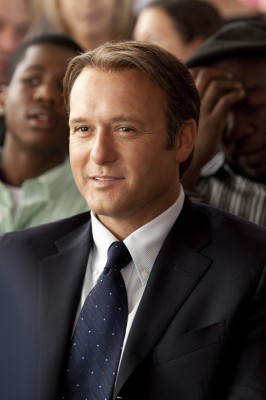 Tim McGraw als Eddie Newton
 Kathryn Hahn als Ursula
Kathryn Hahn als Ursula- 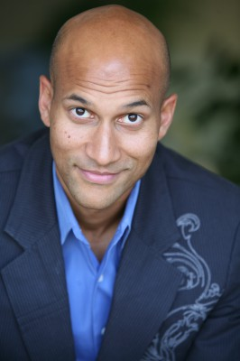 Keegan-Michael Key als Hugo
- 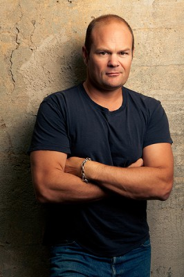 Chris Bauer als Frank's Dad
- Thomas Robinson als Young Frank Walker
- 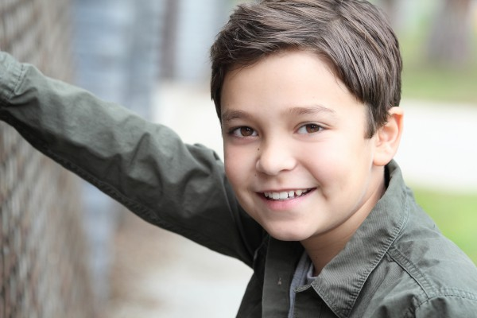 Pierce Gagnon als Nate Newton
- 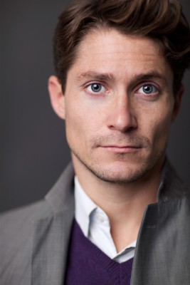 Matthew MacCaull als Dave Clark
- 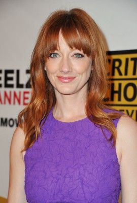 Judy Greer als Jenny Newton
- 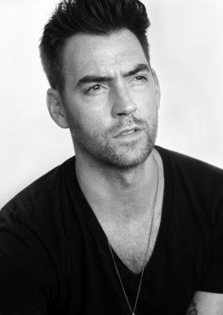 Matthew Kevin Anderson als Bus Driver
- 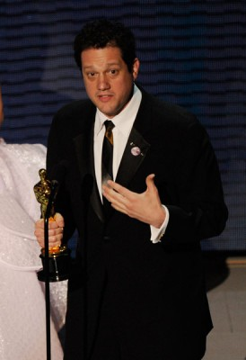 Michael Giacchino als Small World Operator
- D. Harlan Cutshall als Skyscraper Foreman
- Shiloh Nelson als Young Casey Newton
- Xantha Radley als History Teacher
- 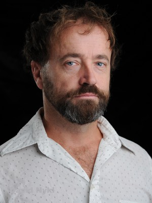 David Nykl als Science Teacher
 Paul McGillion als English Teacher
Paul McGillion als English Teacher- Pearce Visser als Beefy Cop
- 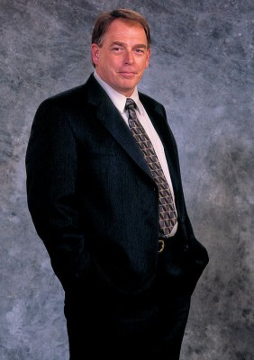 Garry Chalk als Jail Desk Jockey
- Yusuf A. Ahmed als Jetpack Dexter
- Alex Barima als Jetpack Buddy
- Jedidiah Goodacre als Jetpack Buddy
- Kate Crutchlow als Monorail Mother
- Priya Rajaratnam als Young Astronaut
- Parm Soor als Astronaut's Father
- 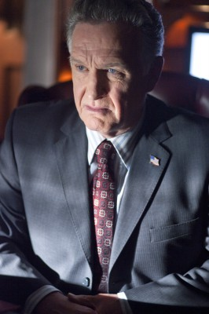 Tom Butler als Police Captain
- Michael Rowe als Deputy
- 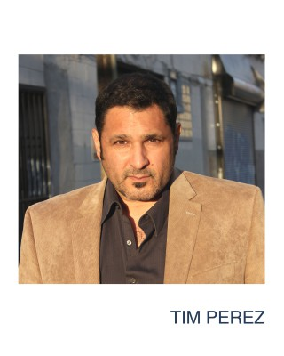 Tim Perez als Deputy
- 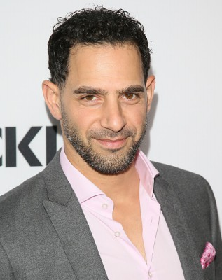 Patrick Sabongui als Eiffel Tower Guard #1
- Romuald Hivert als Eiffel Tower Guard #2
- Fraser Corbett als Jensen
- 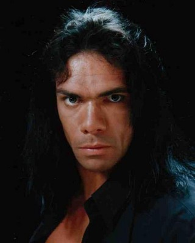 Darren Shahlavi als Tough Guard
- Aidan Gemme als Young British Recruiter
- Natasha Davidson als GM Plant Worker
- 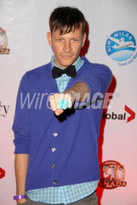 Paul Anthony als Thick Glasses , uncredited
- Nicholas Barrera als World's Fair Patron , uncredited
- Jason Bell als Dave Clark #7 , uncredited
- Aimee Bowen als Pedestrian , uncredited
- 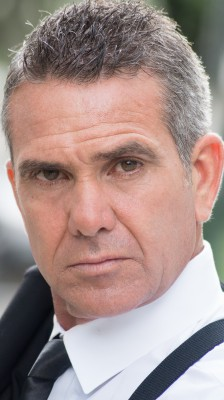 Bradley Bowen als Gentleman - 1964 World Fair , uncredited
 Clint Carleton als Pierre Clark , uncredited
Clint Carleton als Pierre Clark , uncredited- Gracie Danielsen als DQ Patron , uncredited
- Leslie Danielsen als DQ Patron , uncredited
- Luke Danielsen als DQ Patron , uncredited
- Michael Ray Davis als Lonely Man , uncredited
- Amy Esterle als Greyhound Girl , uncredited
- Chrystall Friedemann als World's Fair Lady , uncredited
- Monique Ganderton als Dave Clark #1 , uncredited
- Glen Gordon als Donnie / Science Kid , uncredited
Datei: X:\2015(N-Z)\World Beyond, A (2015, FSK12, 1920x872).mkv seit 19.09.2015
Festplatte: HD 2015(A-Z)
 Es gibt insgesamt 161 Filme in der Gruppe '2015(N-Z)'
Es gibt insgesamt 161 Filme in der Gruppe '2015(N-Z)'